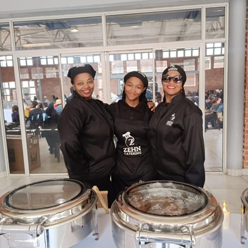

Zehn caterer
From intimate gatherings to grand corporate events, we craft unforgettable culinary experiences with a personal touch.
Uncompromising Quality & Sourcing:
Our commitment begins long before we step into the kitchen. We source organic, local, and sustainable ingredients whenever possible. This isn't a trend for us; it's a core principle that directly translates to superior flavor, vibrant presentation, and a clear conscience.
Collaborative & Creative Menu Design:
We dont just hand you a menu; we build it with you. Your event planner, our executive chef, and you will collaborate to design a menu that aligns with your theme, dietary needs, and personal preferences. We love a creative challenge!
The Zehn Service Standard:
Our service staff is trained to the highest standards of professionalism, discretion, and anticipatory service. They are not just servers; they are ambassadors of your event, ensuring every guest feels attended to and every detail is managed seamlessly behind the scenes.
Meticulous Event Partnership:
We act as an extension of your planning team. We coordinate closely with your venue, planner, and other vendors to ensure a flawlessly synchronized event day. Our project management and attention to logistical detail mean you can relax, knowing everything is in expert hands.
Transparency & Trust:
We believe in clear, upfront communication and detailed proposals with no hidden fees. You will have a single point of contact throughout the planning process, making everything simple, organized, and stress-free.
Mission statement
- Quality & Excellence: We use only the freshest, finest ingredients to create dishes that delight the senses.
- Community & Empowerment: We are committed to empowering South African women by providing opportunities and training within our business.
- Authenticity: Every plate tells a story. We cook with heart, infusing every dish with authenticity and care.
Vision Statement
- We in vision being rated as one of the top catering services in the region.To build a brand that garners a loyal and returning clientele.
- Provide meals of high class and taste to clients all over Africa, then the world
MEET THE TEAM
MEET THE FONDER
Zama Tlhale, the heart and soul behind Zehn Caterers, started this venture not just as a business but to build a better future for her family and her community. Her hands-on approach and dedication to every detail ensure that your event receives the attention it deserves.